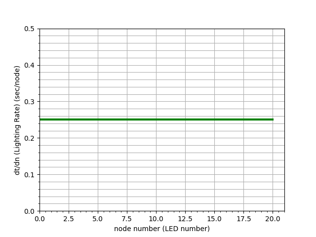
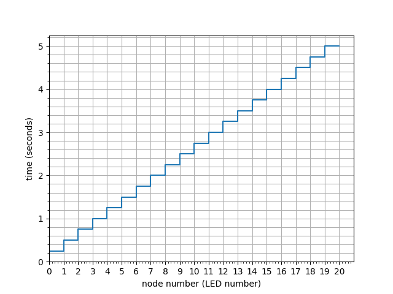
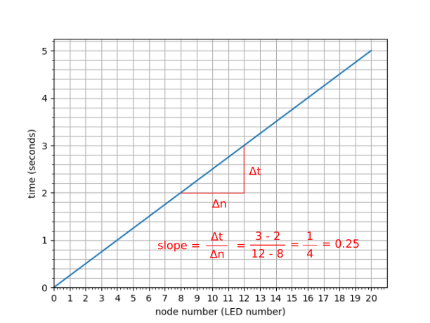

So far, when we've lit up the lights in sequence, we've had a constant rate of change. For example, if we light up all the lights in sequence with a 0.25 second delay, we would do this:
import board
import neopixel
import time
pixels = neopixel.NeoPixel(board.D18, 20)
for i in range(20):
pixels[i] = (10,0,0)
time.sleep(0.25)
It takes 0.25 seconds for each light to light up, so if we refer to each light as a node (n), then the rate of change is 0.25 seconds per node. We can write this as:
$$\frac{\Delta t}{\Delta n} = 0.25 \text{ sec/node}$$
Where:
$$ t = \text{time [seconds]} $$
$$ n = \text{node (LED) [unitless]} $$
The Δ symbol indicates the change, so Δt is the change in time. Δ is used to represent a discreet change
If we were to graph the rate of change it would be pretty boring; just a straight horizontal line:

So, how long does it take to light up all 20 lights? Well if it takes 0.25 seconds/node then the total time (t ), and we call total number of nodes nnodes will be:
$$ t = \frac{\Delta t}{\Delta n} \cdot n_{nodes} $$
and:
$$ nt = 0.25 \cdot 20 = 5 \text{ sec} $$
A graph of the change with time would look something like this.

The function is stepwise because, in the sequence, a light turns on and then it waits 0.25 seconds for the next light to turn on. This is one of the reasons we use the Δ notation.
A note on notation: Now we're going to cheat a bit and use the d notation instead of Δ. d represents an instantaneous rate of change, so it's not quite appropriate in this example, but it allows us to generalize a bit and show thing in two different ways. So our rate of change equation would be written as:
$$\frac{dt}{dn} = 0.25 \text{ sec/node}$$Given this rate equation, there are ways for us to figure out the equation for time as a function of node number (t(n)).
The easiest way is to realize that the rate dt/dn is the slope of the graph of time versus node number. Since the rate is constant (0.25) then the slope of the time vs node number graph is constant which would result in a straight line.
This is the same graph as before but without the steps.
Solution: To light up the last 5 lights (green) use:
import board
import neopixel
pixels = neopixel.NeoPixel(board.D18, 20)
for i in range(15, 20):
pixels[i] = (0, 20, 0)
for j in range(5):
for j in range(5):
for i in range(20):
print(i,j)
Solution: To repeat the lighting sequence 5 times use:
import board
import neopixel
import time
pixels = neopixel.NeoPixel(board.D18, 20)
for j in range(5):
for i in range(19, 0, -1):
pixels[i] = (0, 20, 0)
time.sleep(0.25)